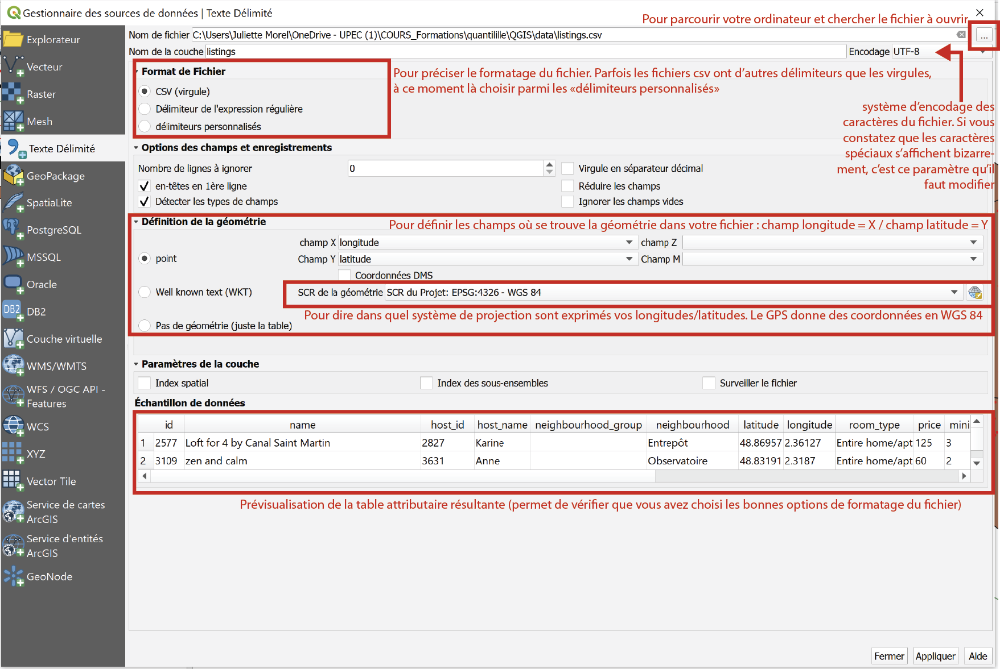
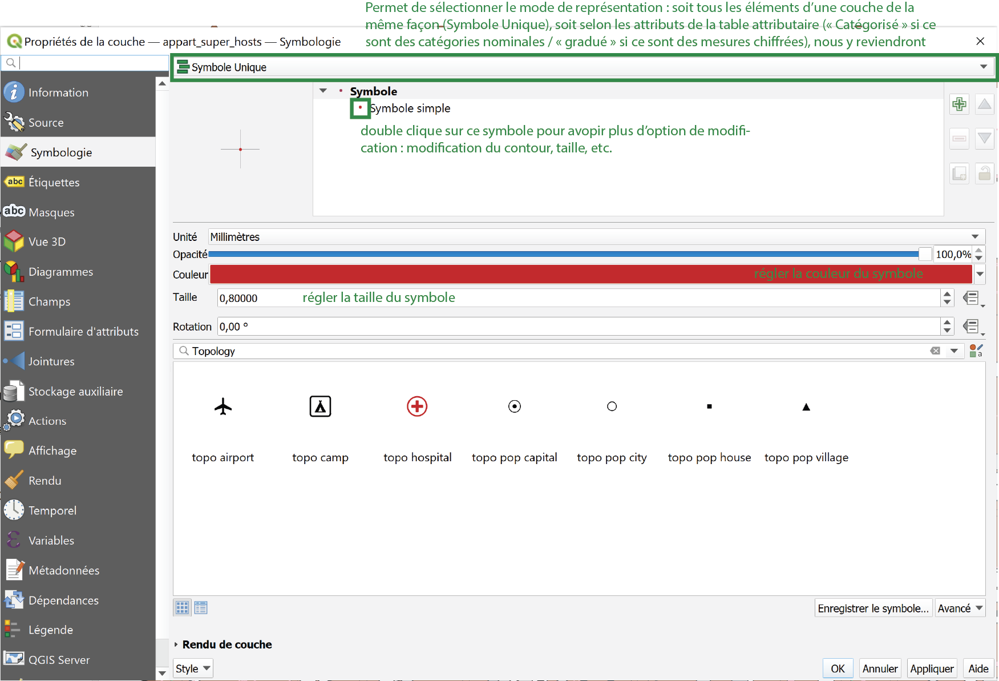
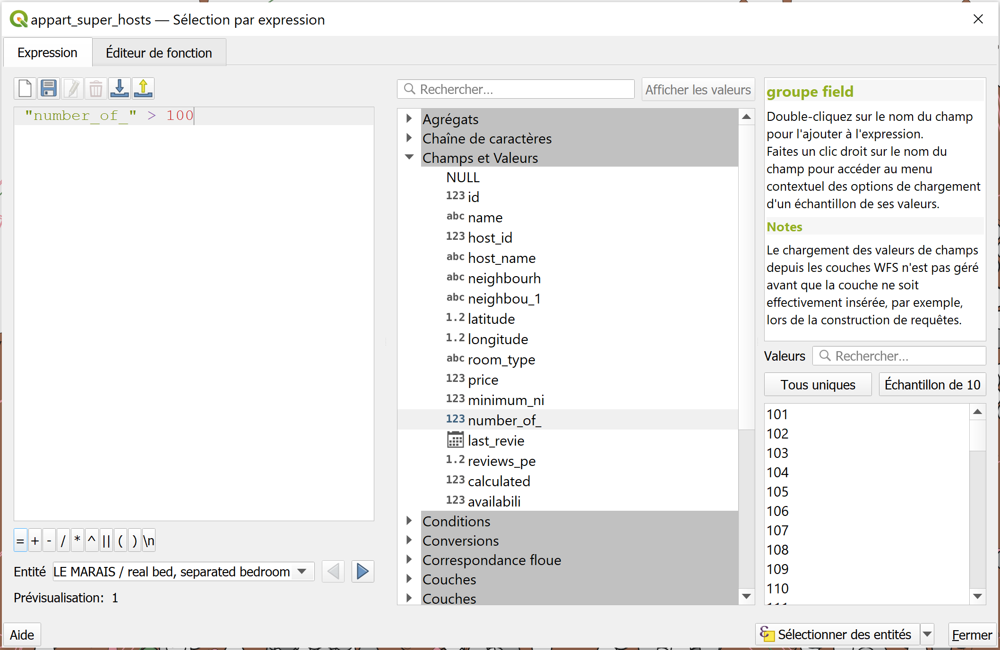
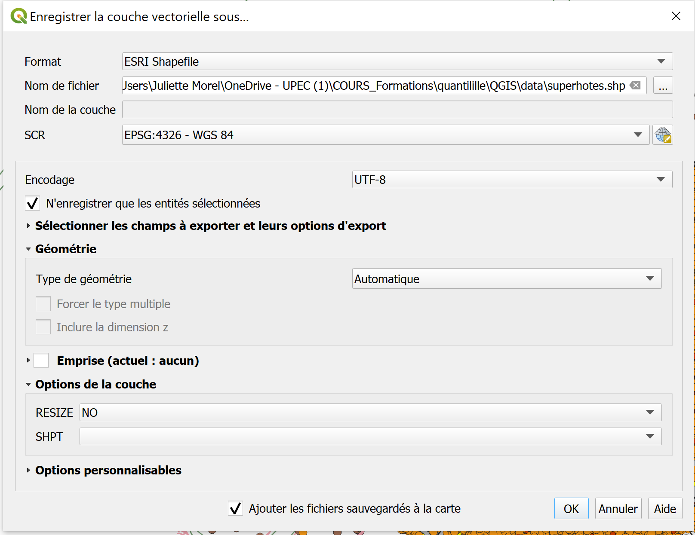
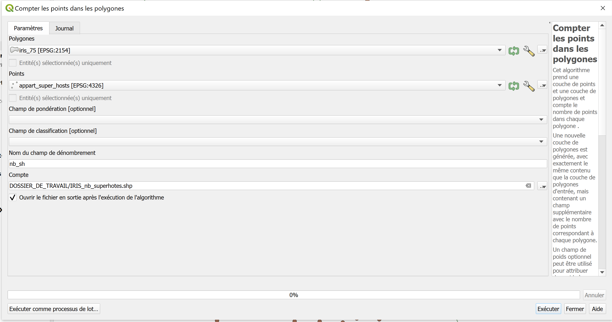
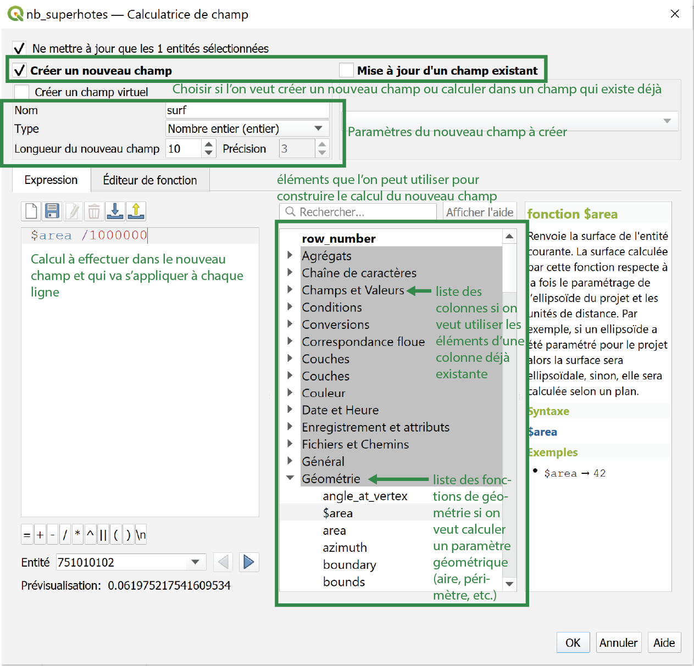
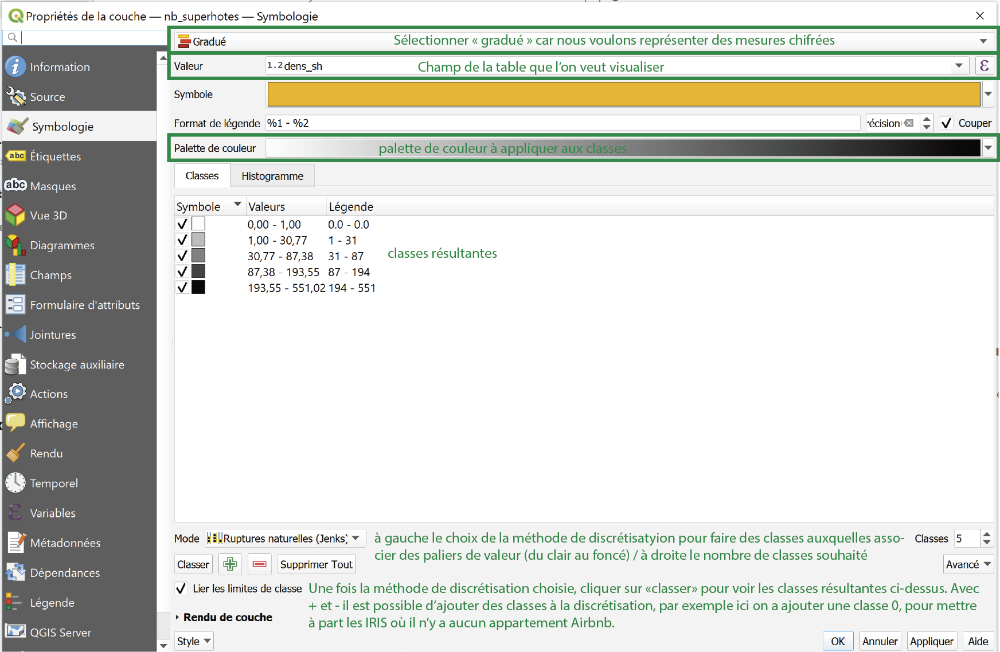
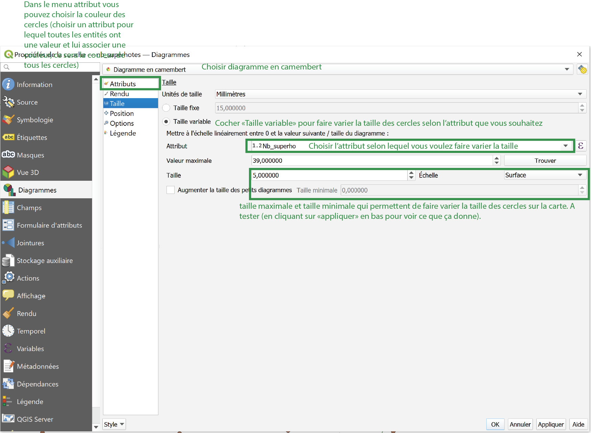

Tous ces exercices ont pour fonction la prise en main du logiciel de SIG Libre Quantum GIS (QGIS), version 3.16(.7). Lien vers le téléchargement de QGIS : https://qgis.org/fr/site/forusers/download.html : Choisir “Installeurs autonomes pour les progiciels OSGeo4W” (Windows) ou “Paquetages officiels authentifiés tout-en-un” (Mac), puis Version long terme (la plus stable).
Vous trouverez un manuel pour l’utilisation de QGIS 3.16 avec le détail de toutes les fonctions offertes par le logiciel à ce lien : https://docs.qgis.org/3.16/fr/docs/user_manual/index.html Il pourra vous servir de référent si vous rencontrez des problèmes lors de ce TP.
Conseil : normalement tout est expliqué dans le TP, à chaque étape, pas à pas. Pour faciliter la pratique de ce TP, nous vous conseillons de lire d’abord toute l’étape pour comprendre son objectif global, puis de relire progressivement sous-étape par sous-étape en les réalisant pas à pas.
Nous allons réutiliser les données sur les appartements AirBnB à Paris. Lien pour télécharger les données : <data.zip> Extraire le fichier compressé téléchargé et placer les données dans un dossier consacré à cet exercice. Attention ! Nous allons créer de nombreuses fihciers pendant ce TP. Afin que leur création et leur utilisation se passent le mieux possible, merci de respecter les règles suivantes : Créer un dossier dans lequel vous allez bien enregistrer toutes les nouvelles couches de données avec des noms compréhensibles (éviter les “toto”, “tata”, on ne s’y retrouve vite plus). * Dans le nom des fichiers, éviter les espaces (vous pouvez par exemple les remplacer par des _ [tiret du 8]) et les caractères spéciaux. *
Ouvrir QGIS. Enregistrer le projet QGIS dans le dossier créé sous le nom Airbnb_exo1.qgz (Barre de menu supérieure > Projet > enregistrer sous). Pensez à enregistrer régulièrement le projet pendant l’exercice afin de ne pas perdre vos manipulations et réglages si le logiciel plante.
Avant de commencer l’exercice, nous allons réfléchir tous ensemble aux étapes à mettre en place pour réaliser une carte de la densité des appartements supers-hôtes Airbnb à Paris avec les données dont nous disposons.
Charger dans un nouveau projet QGIS : via le gestionnaire des sources de données > Vecteur : * Com_75.shp : les communes composant Paris * IRIS_75.shp : Les IRIS découpant les communes de Paris * River.shp : la Seine pour l’habillage * Roads.shp : les routes principales pour l’habillage
Via le gestionnaire des sources de données > Texte Délimité, pour les données de AirBnB : fichier listing.csv qui comprend la liste des appartements Airbnb à Paris. Dans QGIS, il est possible d’intégrer des données spatialisées à partir d’un fichier texte de type csv, et elles auront une spatialité s’il leur est associé des coordonnées, par exemple dans deux colonnes, latitude et longitude. C’est pratique lorsque vous créez vous-même un fichier de données ponctuelles (par exemple en récupérant des coordonnées sur Google maps ou via GPS). Pour cela, paramétrer comme ci-dessous le gestionnaire de sources de données : 
Une fois les couhes de données chargées dans QGIS, il est souvent nécessaire de passer par une étape de modification de la visualisation dans QGIS pour mieux régler l’ordre des couches et la symbologie, puisque la première dépend de l’ordre d’ouverture des couches de données et la seconde est proposée par défaut par QGIS et est souvent fautive ou rend difficile à distinguer les différents éléments. Pour changer l’ordre des couches : dans la fenêtre de gestion des couches, cliquer sur la couche à mettre en dessous ou au dessus, et la tirer jusqu’au niveau où vous voulez la placer. Pour changer la symbologie d’une couche il faut : Clic droit sur la couche > propriétés > symbologie > voir la capture ci-dessous pour le paramétrage 
Manipuler l’ordre des couches et la symbologie pour faire en sorte que on visualise mieux les différents éléments.
Sélection des supers hôtes : Il y a enormément d’appartements proposés à la location sur Airbnb à Paris, et donc dans la couche listing, mais beaucoup ne sont que très rarement en location. Je propose de ne garder que les appartements souvent loués, que nous appelerons “supers-hôtes”. Nous allons ouvrir la table attributaire de la couche listing pour observer quels critères on peut utiliser pour identifier ces supers-hôtes : Au delà de 100 commentaires? Au delà de 300 jours de location/an ?… Une fois ce critère fixé, on va pouvoir sélectionner les entités y répondant pour ne garder plus que celles-là : Table attributaire de la couche > selectionner les entités en utilisant une expression > paramètres : voir par exemple ci-dessous (si l'on choisi le critère du nombre d'avis) 
Ensuite il faut créer une nouvelle couche à partir de la sélection, afin de n’avoir plus que les appartements supers hôtes qui nous intéressent. Nous appelerons la nouvelle couche superhotes.shp : clic droit sur la couche dans la fenêtre de gestion des couches > exporter > Sauvegarder les entités sous > Paramètres : suivre l'exemple de capture d'écran ci-dessous  Attention à bien cocher “N’enregistrer que les entités sélectionnées”
Pour compter les appartements superhosts par IRIS, nous allons utiliser l’outil d’analyse “Compter les points dans les polygones”: Vecteur > outils d'analyse > Compter les points dans les polygones > Paramètres : voir la capture ci-dessous 
Maintenant que nous avons le nombre de supers hôtes par IRIS, il faut calculer leur densité, qui consiste à les rapporter à la surface de l’IRIS. Cela sera plus parlant pour comparer les IRIS de surfaces différentes. Pour calculer la densité des supers hôtes par IRIS nous allons utiliser l’outil de calcul de champ, c’est-à-dire un outil permettant de créer une nouvelle colonne dans la table attributaire et d’y calculer toutes sortes de choses : Table attributaire > Ouvrir la calculatrice de champ > Paramètre : voir capture ci-dessous (exemple pour calculer la surface des entités IRIS) 
Avec cet outil : * créer un champ surface et y calculer la surface de chaque IRIS (attention, l’unité du projet est en m²; il faut les diviser par 1 000 000 pour obtenir des km²) * créer un champ densité des appartement par IRIS, et y calculer la densité des appartements Airbnb par IRIS : nb appartement/surface
Maintenant que tout cela est calculé, nous pouvons avoir une idée générale de la densité des appartements supers hôtes à Paris en regardant les statistiques générales des densités, grâce à l’outil “statistiques basiques pour les champs”, qui donne les valeurs statistiques centrales et de dispersion de la série séléctionnée : Vecteur > Outils d'analyse > Statistiques basiques pour les champs > Paramètre : sélectionner la couche avec les supers hôtes comme "couche source" et le champ de densité calculé comme "champ pour le calcul des statistiques" > Double cliquer ensuite sur le résultats "statistiques" qui apparait normalement dans une fenêter à droite de l'écran. Vous pourrez ainsi estimer la densité moyenne des appartements supers hôtes à Paris (c’est-à-dire leur densité sur l’ensemble du territoire parisien), ou estimer la concentration ou non de ces densités (sont-elles partout pareils à Paris?) grâce aux valeurs de dispersion (écart-type notamment).
Il est également possible de cartographier ces densités pour en faire une meilleure analyse. Nous allons d’abord représenter par des palliers de valeurs (du clair au foncé) la densité des appartements par IRIS (carte choroplèthe). Pour cela on va utiliser les propriétés de symbologie, dans les propriétés de la couche où ont été calculées les densités, et en particulier la représentation “graduée”, comme sur la capture ci-dessous. Tester différentes méthodes de discrétisation et différentes palettes de couleur pour faire la carte de densité qui vous semble la mieux convenir. 
Si l’on veut représenter les chiffres bruts du nombre d’appartements par IRIS, selon les canons de la sémiologie graphique, il faudra utiliser la variable taille et faire des cercles (ou carrés ou autre forme) proportionnels. Qgis n’est pas très bien doté pour faire ce genre de représentation, il faut passer des chemin quelque peu indirectes. On va en fait détourner la propriété diagramme (dans les propriétés de la couche) : Clic droit sur la couche > Propriétés > diagramme > Paramètre : voir capture ci-dessous (exemple pour calculer la surface des entités IRIS) 
Vous avez maintenant une vision cartographique de la densité des appartements supers hôtes d’Airbnb à Paris.
Une fois cet exercice terminé, vous pouvez continuer la prise en main de QGIS avec l’exercice 2 qui se fera à partir des mêmes données